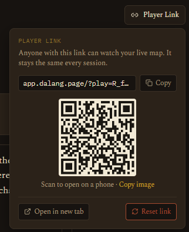

Using Dalang Web
Dalang Web
Dalang Web is the browser version of Dalang. It has the same tabs and the same tools as Dalang Desktop, with one difference up front: you sign in to an account, and your campaigns are saved on the server instead of a file on your computer.
Dalang Web is in beta. Your campaigns are looked after, but while things are still settling in it is worth keeping your own copy too. See Exporting your data below.
Creating an account and signing in
The first time you visit, choose Create one and pick:
- a username, how you are shown in the app,
- an email address, used only to sign in and to recover your account,
- a password, at least 8 characters with a lowercase letter, an uppercase letter, and a number.
Creating an account also asks you to confirm that you are at least 13 years old and to agree to the Terms of Use and Privacy Policy. That agreement, and the version of the terms you agreed to, is recorded on your account.
You may be asked to confirm your email by clicking a link before you can sign in. If it does not arrive in a minute, check your spam folder.
To sign in afterwards you can type either your username or your email in the first field, along with your password. Password resets are not automated yet during the beta: if you are locked out, email support@dalang.page and it is handled by hand.
What the free plan includes
During the beta, Dalang Web is free. The free plan is set generously so a full published starter adventure fits comfortably. It currently allows, per account:
- 2 campaigns at a time
- 1 saved adventure in your Library
- 25 homebrew entries (monsters, magic items, and equipment combined)
And per campaign:
- 40 NPCs
- 25 locations, with up to 2 maps on each
- 40 quests
- 8 players
- 250 event log entries
Every feature is available on the free plan. Nothing is locked behind a payment. If you reach a limit, Dalang tells you which one and you can remove an item to add another. Plans with higher limits are planned for after the beta.
Images are added by pasting a link to a hosted image. Uploading image files from your computer is a desktop-only feature for now. See Which image links work below.
Which image links work
Every image in Dalang Web, portraits, photos, the campaign card image, and battle maps, is a link. Dalang loads the file straight from that address each time it is shown, so the link has to point directly at the image file itself, on a host that lets other sites load it. A good link opens just the picture in your browser and usually ends in .jpg, .png, .webp, or .gif.
Links that work: a direct file link from an image or file host that allows hotlinking, from your own web space, or from a content host you control. For example a Discord image link, a GitHub raw link, or an itch.io asset. On Wikimedia Commons use the "Original file" link, not the article page. On Imgur use the i.imgur.com/....jpg link, not the gallery page.
Links that do not work:
- Google Drive, Dropbox, and OneDrive share links. They open a preview page, not the image, they often ask the viewer to sign in, and they block other sites from loading the file directly. Google Drive's "direct link" workarounds are unreliable and Google keeps changing them, so do not count on them.
- A page URL from Pinterest, Flickr, Instagram, Facebook, or X. You need the address of the image on its own. Right-click the image and choose "Copy image address", though some of these hosts still block other sites from loading their images.
- A link from Google Images search results. It is usually a redirect or a small thumbnail, not the real file.
To get a direct link: open the image on its own in your browser (right-click, then "Open image in new tab"), and copy the address from the address bar. If that address ends in an image extension and shows only the picture, it works in Dalang.
If an image field shows the placeholder icon, the link did not load. If an image loads sometimes and not other times, the host is blocking other sites from using it, or the link has expired. Move the file to a proper image host and use that link. For maps and animated (video) maps, see What kind of link works on the map page.
The player link
Dalang Web can give your players a live, read-only view of the current scene. From any tab, the header has a Player Link button that opens a small panel with everything for sharing it:
- The link itself, with a one-tap Copy button, ready to paste into Discord, Telegram, or wherever your group talks.
- A QR code your players can scan to open the view on a phone. Copy image puts the QR code on your clipboard so you can paste it straight into a chat.
- Open in new tab opens the read-only page yourself, so you can see exactly what your players see.
- Reset link creates a fresh link and switches the old one off. Use it if a link has leaked or a player has left the group. Dalang asks you to confirm first, because the current link and its QR code stop working right away and everyone still playing will need the new one. Anyone open on the old link is dropped and sees a short message telling them to ask you for the new link.

Anyone with the link can open it, no sign-in needed. Apart from a reset, the link stays the same for the life of the campaign, so you can share it once and reuse it every session.
It shows the current location, the active quests, and which NPCs are present, and during a live fight it shows the battle map, dice rolls, tokens with fading and a color-coded HP bar, and the pings and drawings you make. It updates on its own while it is open, and a small "Report content" link in the corner lets a player flag something to Dalang directly.
What the link shows is the same curated set the desktop Player Window shows. It never exposes your DM notes, secrets, encounter details, or treasure. You control what is visible by what you set as the current location and which quests are active.
What your players can do on the battle map
During a live fight, the read-only view is not completely fixed to your camera:
- Pan and zoom. Each player can move around the revealed map on their own screen, by mouse drag and scroll wheel, or by dragging and pinching on a phone or tablet. It only affects their screen, never yours or anyone else's. A Follow DM button appears once they have moved away from your framing and snaps them back to it, and the view also resets on its own whenever you switch to a new map or location.
- Inspect a token. Off by default. The Intel tool's Stat toggle, per category (Player, NPC, Monster), lets players click a token during an encounter to open a read-only info panel with its full stat block and active conditions. For a player character it shows a character card (race, class, level, speed, initiative, passives, ability scores and saves). Turning it on for NPCs reveals a linked stat block to everyone, so think about plot-twist NPCs before you enable that one.
Both of these work the same on the desktop Player Window.
Bringing a campaign from Dalang Desktop
A campaign moves from Dalang Desktop into Dalang Web as a file:
- In Dalang Desktop, open Campaign Settings and use Export Campaign. Choose Full Campaign and save the file.
- In Dalang Web, open the New Campaign box and choose From a File, then pick that file. It always adds a new campaign, it never overwrites one you already have.
Locations (including nested sub-locations), NPCs, quests, players, the event log, the current location, and any homebrew the campaign uses all carry across. Homebrew merges into your account's Compendium with the same keep-mine, keep-theirs, or keep-both choice Dalang Desktop uses.
Update Dalang Desktop to version 1.3.0 first. The desktop-to-web transfer was built and tested in 1.3.0, and it is the version that carries the campaign's card image across as well. Files exported from an older version still import, but the card image will be missing and the path has had less testing. Check your version under Campaign Settings, and get the latest from the Download page.
Two things to know going in:
- Images added from a file on your computer (portraits, photos) do not carry across, because Dalang Web only uses hosted image links. Dalang Web tells you how many there are so you can re-add them with a link afterwards.
- Free-plan limits are checked before anything is imported. If the campaign is over a limit, Dalang Web names exactly which one (for example, a location with 3 maps against the free limit of 2) so you can remove what is over and export again.
Exporting your data
Open Campaign Settings and use Export Campaign. This saves the whole campaign, locations, NPCs, quests, players, the event log, your settings, and any homebrew you have used, to a single file.
That file opens in Dalang Desktop, and it can also be brought back into Dalang Web later from the New Campaign box (From a File). It is the same format in both directions, so nothing is lost moving a campaign between the two.
During the beta, this is also how you keep your own backup. It is worth doing every so often.
How Dalang Web differs from Dalang Desktop
The two are the same product with the same tabs. These are the practical differences:
- An account. Dalang Web needs one; Dalang Desktop does not.
- Where campaigns live. Dalang Web keeps them on the server so you can reach them from any browser. Dalang Desktop keeps them in a file on one machine.
- Images. Dalang Web uses image links only, see Which image links work. Dalang Desktop can also use image files from your computer.
- The player screen. Dalang Desktop opens a second window on your own computer, for a screen at the table. Dalang Web gives you a link instead, which works the same way for a remote group.
- Plan limits. Dalang Web has the per-account limits listed above. Dalang Desktop has none.
Everything else, Story, Gameplay, Campaign Prep, NPCs, the Job Board, Players, the live battle map, the Event Log, the Compendium, and Campaign Settings, works the same in both.